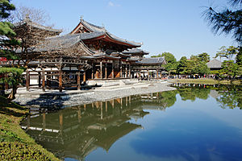
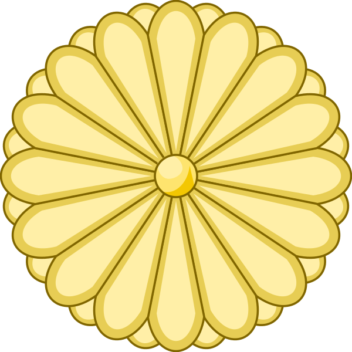
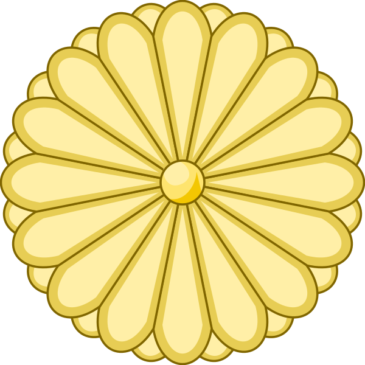

Cultura japonesa

La cultura de Japón es el resultado de un proceso histórico que comenzó con las olas inmigratorias originarias del continente asiático y de las islas del océano Pacífico, seguido por una fuerte influencia cultural proveniente de China. Posteriormente, el shogunato Tokugawa instauró a mediados del siglo XVII un largo periodo de aislamiento con el resto del mundo (sakoku) que se prolongó hasta el comienzo de la Era Meiji, a finales del siglo XIX, cuando recibió una inmensa influencia extranjera que se acrecentó tras el fin de la Segunda Guerra Mundial. Esto en efecto dio como resultado una cultura distinta a otras culturas asiáticas.
En Japón, las interrelaciones personales están muy influenciadas por las ideas de «deber», «honor» y «obligación», conjunto conocido como giri (義理), y que representa una costumbre diferente a la cultura individualista de las naciones occidentales. Las concepciones de «conductas deseables» y «moralidad» son menos practicadas en situaciones familiares, escolares y de amistad; sin embargo, se observa una práctica más formal frente a superiores o gente desconocida.
Un aspecto que ha tenido un rol significante en la cultura japonesa es el idioma japonés. También se practica el nemawashi (根回し), que se refiere a la preparación cuidadosa y seria de un proyecto, que refleja la armonía aceptada y respetada dentro de la cultura japonesa.
Por otro lado, los japoneses poseen un sentido del humor intrincado y complicado, que se refleja mucho en la cultura, la ética, el idioma y la religión, y que a veces es considerado como muy difícil de interpretar por otras culturas.
 
